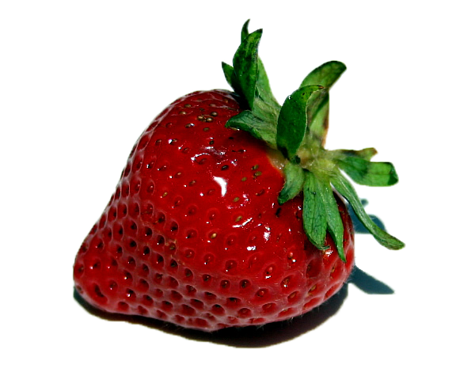

Dokumentation
Idee und grafisches Kozept
Timm‘s Erdbeerhof ist ein mitlerweile 30 Jahre lang geführter Familienbetrieb. Im Fokus stehen persönlicher Kontakt und die regionale Vermarktung. Offenheit und familiäres Miteinander genießen einen sehr hohen Stellenwert, und so möchten wir diese Werte auf die Gestaltung einer modernen, aber dennoch warmen, traditionsbewussten und einladenden Onlinepräsens für jung und alt übertragen. Übersichtlichkeit und beschränkung auf wesentliche Inhalte stehen neben der Präsentation des Betriebes, sowie der Familie im Vordergrund. Der Familienbetrieb soll nahbar, regional präsent und dennoch modern wirken.
Style Tiles
Bei der Erstellung der Style Tiles war schnell klar, dass die Farbpalette eine starke Assoziation mit der Erdbeere, bzw. ihren Feldern und alles was dafür steht, hervorrufen soll.
Die Wahl fiel hier auf das Style mit dem modernsten Ansatz, dem offensten, hellsten und freundlichsten Design.
Die Wahl der letztlichen Farbpalette, sowohl für die des Logos als auch der Seite, trafen wir erst später, um sie im Kontext zu sehen und bei Bedarf zu ändern.
Typografie
Für die Typografie wollten wir eine liebevolle, verspielte Schrift, die den Erdbeerhof repräsentiert. Der Google font 'Dancing Script' spiegelt all dies wieder.
Für Fließtext nahmen wir die konventionelle 'Helvetica Medium'.
Die dritte Schriftart im Bunde ist gezielt im Bruch mit den anderen. Sie steht als moderne, starke, und doch freundliche Schrift für Untertitel und dergleichen zur Verfügung.
Farben
Wie bereits erwähnt, sind die gewählten Farben stellvertretend für unser Hauptprodukt, die Erdbeere. Entstanden ist diese Palette durch Arbeit an Logo und Inhalt.
Responsive Webdesign
Wichtig an unserem Projekt war uns von Anfang an, dass der Benutzer von mobilen Endgeräten einfachen Zugang auf für ihn relevante Informationen bekommt.
In unserem konkreten Beispiel bezieht sich dies vorallem auf eine übersichtliche und eindeutige Navigation, die ihn problemlos zu Adressen & Öffnungszeiten bringt.
Unseren Inhalt haben wir entsprechend organisiert und benutzerfreundlich gestaltet.
Szenario
Der Benutzer ist in der Stadt und möchte gern wissen, wo er einen Erdbeestand findet.
Durch google erreicht er unsere Website, wo ihm die einfache Navigation direkt alle notwendigen Informationen zur verfügung stellt.
Für die Desktopvariante haben wir das Konzept beibehalten, die Benutzerfreundlichkeit steht im Vordergrund.